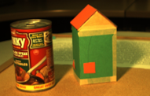
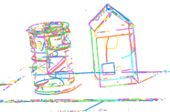
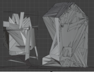
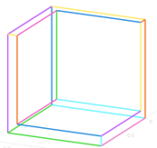
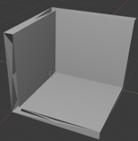
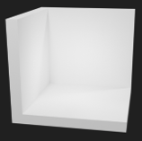

About
I am an undergraduate student at Brown University studying Computer Engineering with a focus on 3D computer vision, machine learning, and biomedical applications. I am a research student in the Interactive 3D Vision & Learning Lab (IVL), Brown Visual Computing Lab, and the Laboratory for Engineering Man/Machine Systems (LEMS).
My research interests span computer vision, 3D reconstruction, AI/ML systems, medical device innovation, and human-computer interaction. I'm passionate about translating research insights into real-world applications that improve healthcare and advance robotic perception.
Research
- Studying theoretical, algorithmic, and engineering foundations of 3D structure reconstruction from multiple 2D images.
- Implementing camera calibration to relate 3D world coordinates to 2D image coordinates.
- Applying epipolar geometry and computing essential/fundamental matrices for multi-view geometry.
- Estimating relative camera poses and performing triangulation for 3D point recovery.
- Leveraging optimization techniques to improve reconstruction accuracy and robustness.






- Extended and validated open-source 3D Slicer tools (SlicerAutoscoperM, Hierarchical 3D Registration) for markerless in vivo skeletal kinematic tracking from biplane videoradiography.
- Assessed tracking accuracy across multiple skeletal structures and joint implants using Bland-Altman statistical analysis benchmarked against marker-based methods.
- Applied multi-view 3D reconstruction and camera calibration principles to biplane radiographic pose estimation workflows.
- Collaborated with a multi-institutional research consortium (Brown, Mayo Clinic, Kitware) supporting global adoption of open-source musculoskeletal tracking software.
- Collected visuotactile dataset on single-hand and bimanual manipulation of deformable objects using the Brown Interaction Capture System (BrICS).
- Designed and fabricated UMI gripper with integrated tactile sensors for robotic manipulation studies.
- Implemented deformable 3D Gaussian splatting reconstruction for ground truth particle tracking in dynamic scenes.
- Applied advanced camera calibration techniques for accurate spatial-temporal reconstruction.
Projects
Co-leading a year-long capstone effort to redesign High-Resolution Esophageal Manometry (HRM) into a patient-friendly, clinically robust medical device. The project encompasses:
- Sensing Innovation: Novel sensor form factors and biocompatible materials for improved patient comfort.
- Electronics Design: Embedded systems and signal processing for real-time pressure data acquisition.
- Software Development: Clinician-centric interface for data visualization and analysis.
- Validation & Manufacturability: Clinical validation against industry standards and design for manufacturability.
- IP Strategy: Patent planning and hospital integration pathways.
- Designed and implemented a black-hole orbital simulation environment with custom state/action/reward spaces.
- Trained RL agents using PPO and DQN algorithms to maintain stable orbits while avoiding collision and boundaries.
- Developed multi-agent competitive environments with realistic gravitational interactions.
- Integrated Physics-Informed Neural Networks (PINNs) to enhance model robustness and sample efficiency.
- Optimized training pipeline for convergence and generalization across diverse scenarios.
Awards & Fellowships
- 3× UTRA Fellow — Brown University Undergraduate Teaching & Research Awards (2025–2026)
- Hong Kong International Mathematical Olympiad (HKIMO) Global Final — August 2023, World Star & Bronze Medal
- 2× International Scholars with Honors — Colombo International School
- 2× Pearson Edexcel Excellence Awards — A-Level and IGCSE Academic Excellence
Work & Teaching Experience
- Research & Software Engineering Intern — July 2026 – Present
- Brown University Health (www.brownhealth.org) & Rhode Island Hospital
- Focus: Healthcare IT systems and clinical research applications
- UTRA Research Fellow — May 2025 – Present
- Brown University Undergraduate Research Support
- Engineering TA & Grader — Aug 2024 – May 2025
- Course: ENGN32/40 (Signals & Systems for Engineering)
- Responsibilities: Course development, GitHub repository management, Gradescope autograder design, assignment grading, office hours support
- One of 24 undergraduate TAs for 150+ students
- Engineering Research Intern — June – Aug 2024
- Summer research in computer vision and 3D reconstruction
Technical Skills & Interests
AI/ML & Computer Vision
Expert: PyTorch, PyTorch Lightning, scikit-learn, NumPy, SciPy, OpenCV, 3D reconstruction
Proficient: Qiskit, PennyLane, TensorFlow
Programming Languages
Expert: Python, C++, MATLAB
Fluent: Java, TypeScript, JavaScript, Golang
Proficient: HTML, CSS, C, Pyret
Design & Simulation
Expert: Fusion 360, SolidWorks
Proficient: COMSOL, MATLAB Simulink, CAD design for manufacturing
Interests & Languages
Research Focus: Chip Design, Electronics, Biomedical Devices, Robotics
Languages: English, Sinhalese
Publications & Preprints
-
Heengama, S. (2026). "Word-Specific Repetition Priming Sustains Character-Level Language Intrusion in Quantized Reasoning Models."
- Heengama, S., Richards, J., & Chong, I. (2026). "Humanness without loss of structure: Ensembling ProteinMPNN with AbLang in the RFdiffusion antibody pipeline." (Manuscript)
- Heengama, S., Chien, C.-H., Schulz, A., & Kimia, B.B. "Reproducible, Precision-Recall Controlled Surface Reconstruction by Curve-Based Lofting and Occlusion Reasoning." (Manuscript in preparation)
- Heengama, S. "A Cost-Effective IoT-Based Intelligent Indoor Air Quality Monitor." Journal of Emerging Investigators, JEI-23-024R4 (first author, 2023). DOI
Education
Brown University
- Sc.B. Computer Engineering (Honors Track), Aug 2023 – May 2027
- GPA: 3.8/4.0
Colombo International School
- Graduated Aug 2023
- A-Levels: 4× A* (2021)
- IGCSE: 10× A*
- GPA: 4.0/4.0
Contact & Links
Collaborations & Inquiries: sanithu_heengama@brown.edu
Acknowledgements
I am grateful to my collaborators, co-authors, advisors, and mentors for their support and guidance.